Homelab mission control.
One Go binary, a live web UI over the Linux hosts you can reach with SSH, Proxmox, Kubernetes, Flux, hardware, storage, alerts and service status.
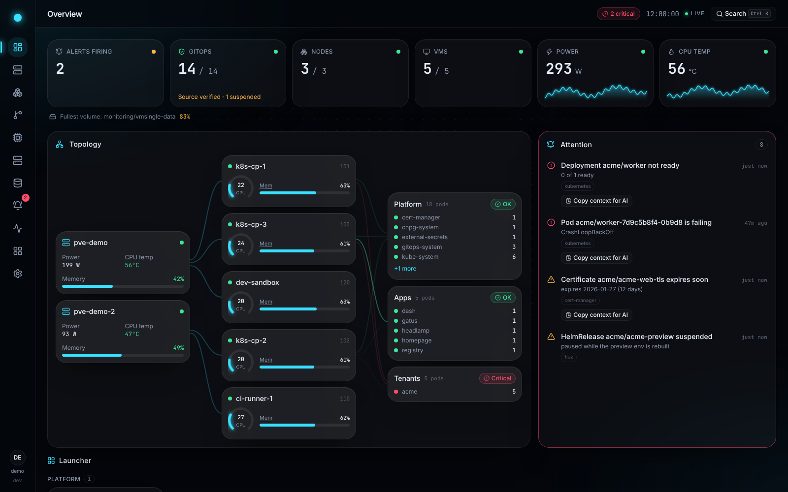
The built-in demo mode: every name and address is made up. Click around it in your browser →
What it is
One screen for the whole lab.
dash is for people who run their own infrastructure: a few Linux boxes, a Proxmox host, a Kubernetes cluster managed with Flux, the storage and monitoring around them. It reads all of it and shows the state in one place, worst problems first.
One live screen, host to pod
The Overview draws the topology from the Proxmox host through its VMs to every namespace, and lists what needs attention, worst first.
Plugins that switch on when configured
Each integration turns on when its settings are complete. Nothing about a particular lab is compiled in.
Live over one SSE stream
The data is live, and only what changed goes out, over a single server-sent event stream.
Installable as an app
Over HTTPS a browser can install dash as an app, on the desktop and on a phone's home screen.
A tour
Every layer of the lab, one click apart.
A command palette (Ctrl K) jumps to any page, VM, node, workload or pod. Select a screenshot to open it at full size.

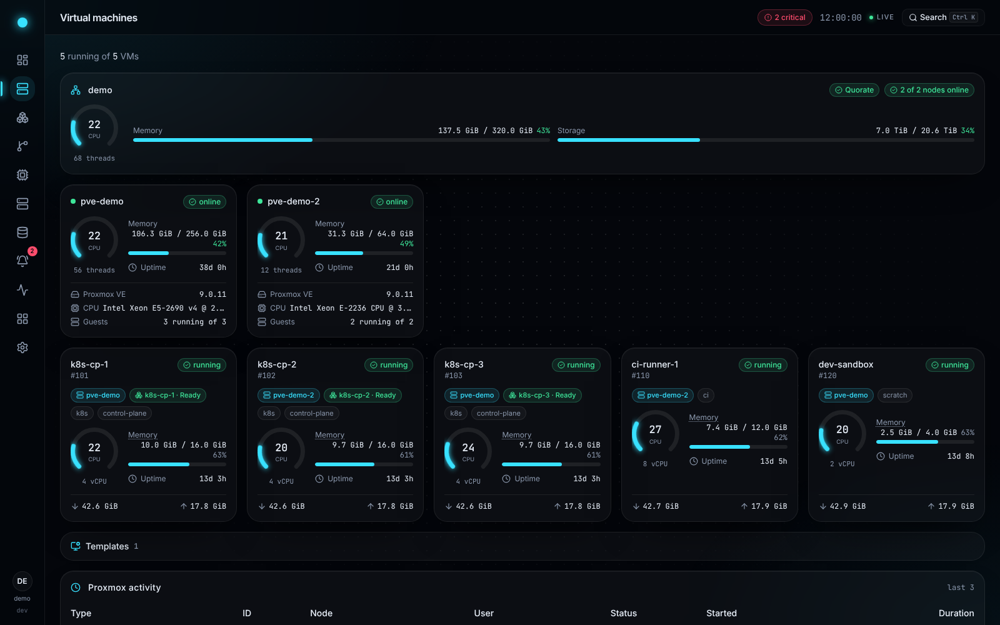

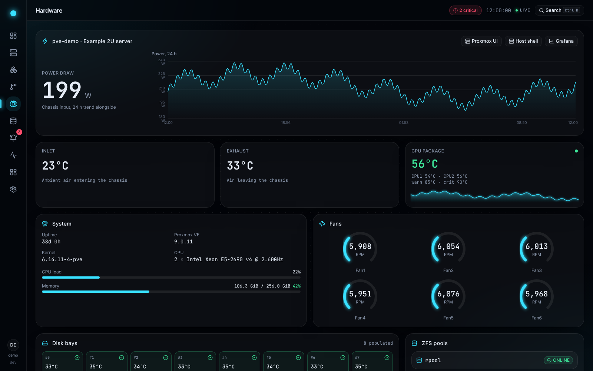

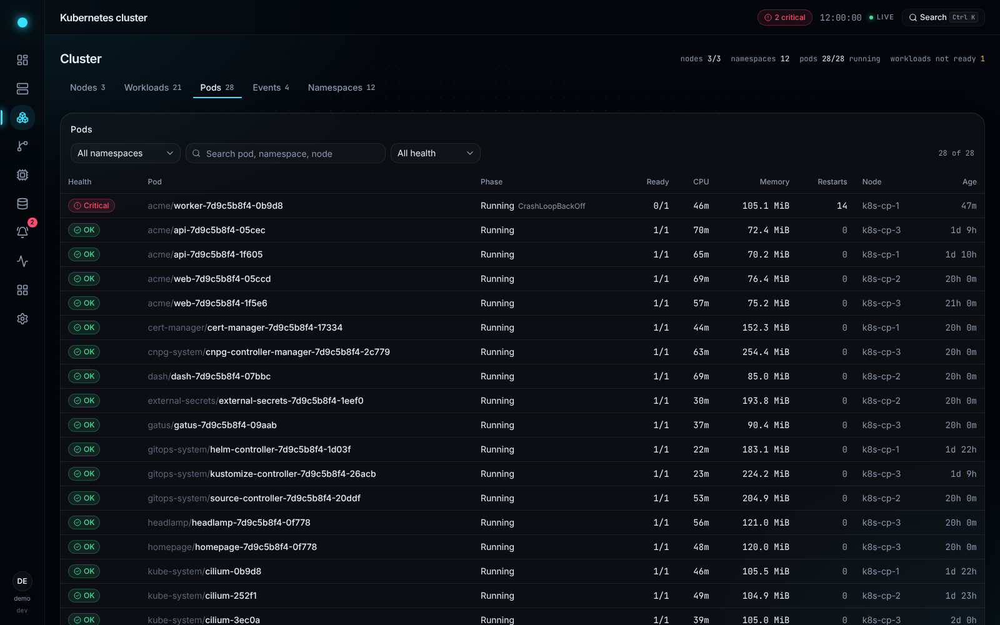

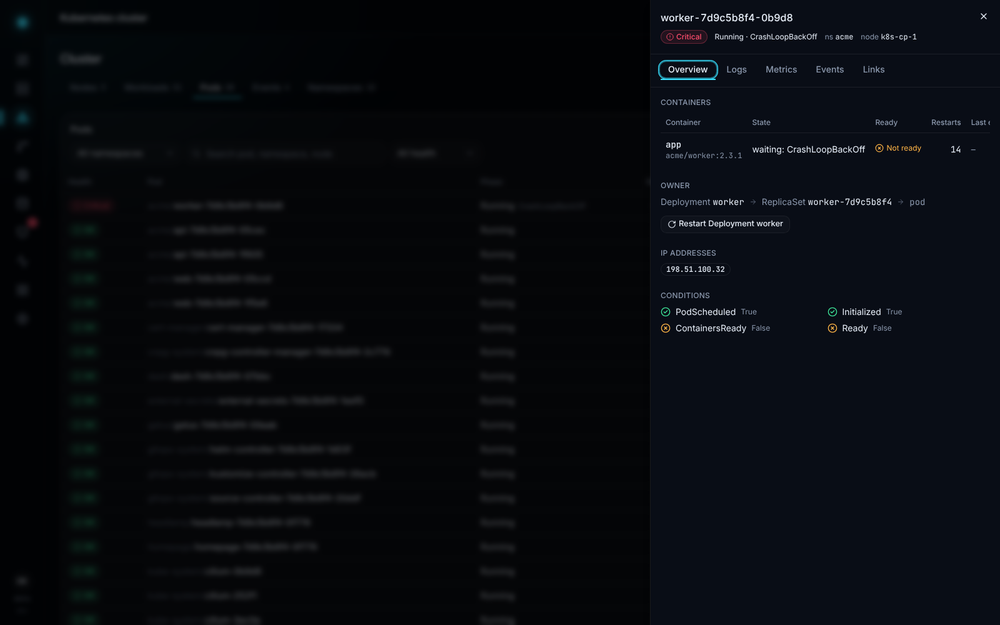

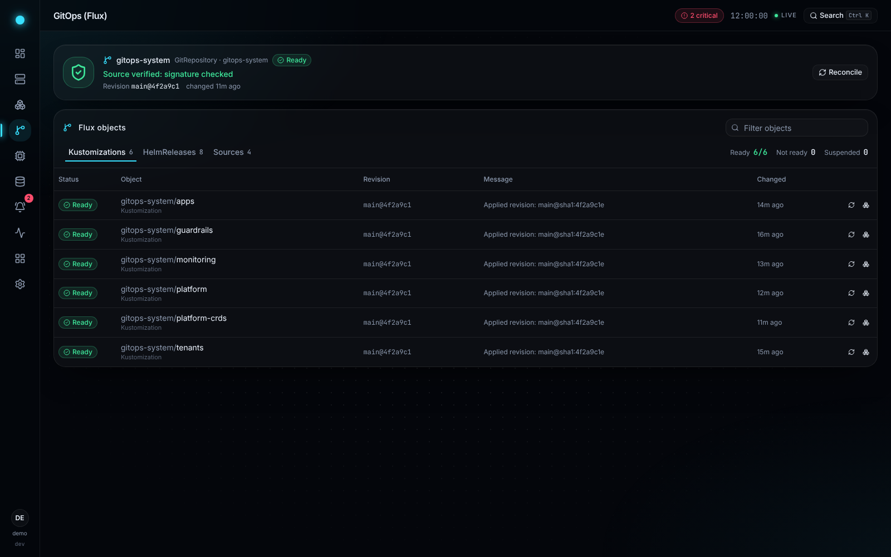

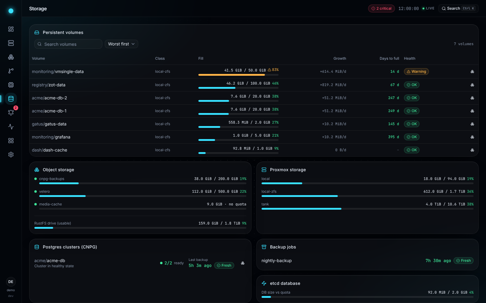

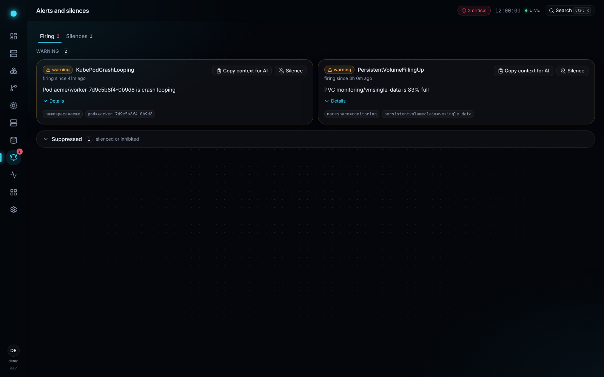

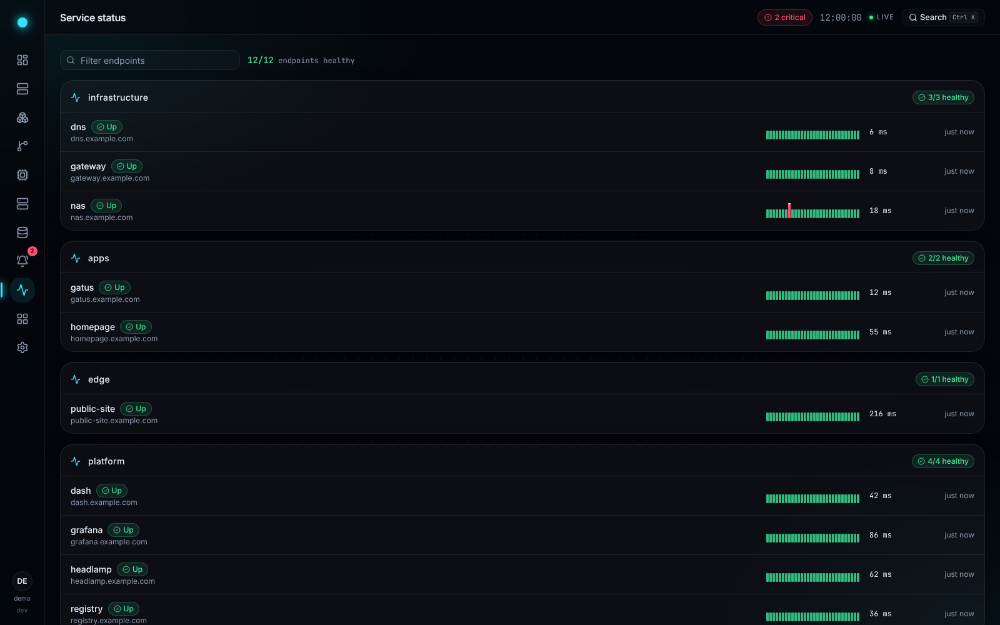

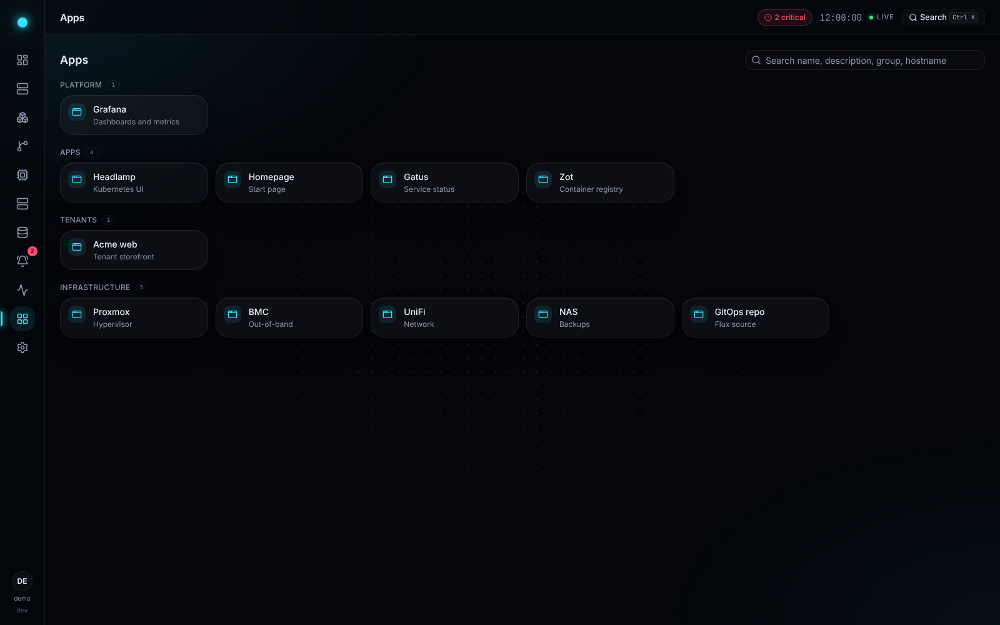
Any Linux host
Add a machine with one SSH connection.
Give dash an address and a user. It signs in with its own key, installs nothing, and shows the machine's hardware, what runs on it and live charts within seconds. No agent, no exporter, no monitoring stack.
From nothing to live
- Name the hostAn address and a user, in Settings. A dedicated unprivileged user is all dash needs.
- Check its fingerprintdash shows the host key it was offered and connects only after you trust it.
- Paste one lineAdd dash's public key to that user's
authorized_keys. dash never holds a password. - Watch it appearCPU, memory, network and disk charts, temperatures and fans, file systems, disks and ZFS pools, containers and systemd services.

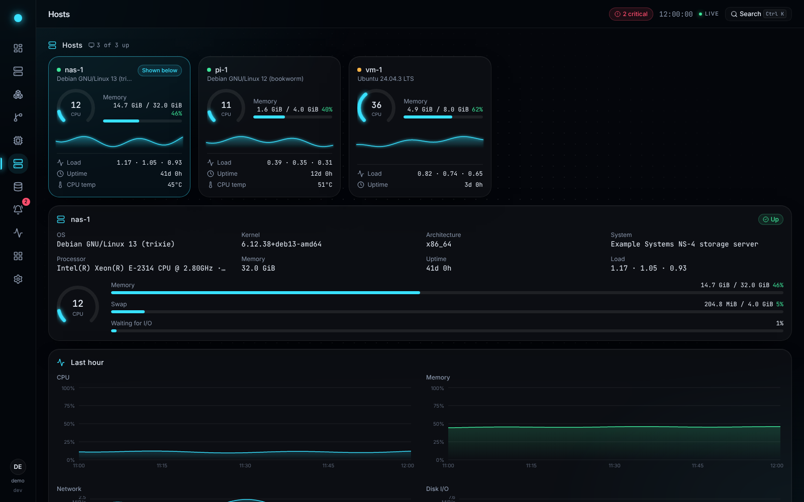
Integrations
Plugins for what you already run.
Every plugin turns on when its settings are complete. Leave one unconfigured and its pages stay out of the way; without a cluster, dash still serves the rest.
- Proxmox VEVMs, snapshots, charts, consoles
- HardwareIPMI, SMART, ZFS
- Linux hosts over SSHHardware, containers, services, live charts
- KubernetesNodes, workloads, pods, logs
- FluxSources, Kustomizations, HelmReleases
- CloudNativePGPostgres clusters and backup age
- RustFSObject-store buckets and capacity
- AlertmanagerFiring alerts and silences
- GatusEndpoint health, grouped
- VictoriaLogsPod logs and a live tail
- Prometheus / VictoriaMetricsThe series behind the charts
- Grafana · HeadlampDeep links from what you are viewing
- LauncherLinks to your infrastructure
What each plugin shows, needs and may do: the plugin docs.
Built for agents too
Let an AI read your lab. You keep the keys.
dash serves a read-only Model Context Protocol server, so an agent can look at the overview, objects, metric series, logs and context bundles with your permissions. It is off until an administrator switches it on.
Copy context for AI
One button on a pod, a VM, an attention item or an alert copies that object's context as Markdown, ready to paste into any chat assistant.
Personal access tokens and OAuth
An agent presents a token scoped to MCP, or signs in through dash with OAuth. Scopes decide what it sees, and a token for MCP is refused by the REST API.
Agent actions wait for you
- An agent asks to actWith an administrator's token, it can ask for a restart, a reconcile or a silence, once you have enabled that plugin's actions.
- Nothing runs yetBy default dash turns the call into an approval request that only the token's owner can decide.
- You approve on the approval pageA push notification can take you to it. The action runs once, and the decision is audited.
Secure by default
It reads a lot and writes very little.
dash writes in three places only, and each is off until you turn it on.
- Three ways to sign inLocal, OIDC, or behind an identity proxy.
- Viewer and admin rolesViewers read. Only administrators run actions or change settings.
- CSRF checks and a strict CSPWrites need a matching Origin and a CSRF header, and scripts load only from dash itself.
- A fail-closed audit logEvery action and settings change is hash-chained, and a change is refused if its record cannot be written.
- Everything powerful is off by defaultRollout restarts, Flux reconciles, silences and the MCP server stay off until you enable them.
- Hosts are read, never changedOne fixed, read-only script over SSH and pinned host keys. No agent, no password, no sudo.
- Secrets stay secretStored encrypted, never shown back, and scrubbed from logs and error messages.
Run it anywhere
One binary. Run it where you like.
dash is a single binary for Linux and macOS, the same binary in a container for linux/amd64 and linux/arm64 on GHCR, and a Helm chart at the same version.
A Linux server
One command installs the binary as a hardened systemd service and prints the link to set your password. No Docker needed.
Binary guide →Docker or Compose
Run the container with a data volume, or start the Compose example with Prometheus and Alertmanager alongside it.
Docker guide →Kubernetes with Helm
A Helm chart, with kustomize and RBAC modes covered, and a guardrail that holds the service account to what you enabled.
Kubernetes guide →Behind oauth2-proxy
Let an identity proxy admit only the users you list, as a sidecar in the cluster.
All deploy guides →Install on a Linux server
curl -fsSL https://dash.techdufus.com/install.sh | sudo shTry it on demo data
docker run -p 8080:8080 -e DASH_DEMO=true -e DASH_SERVER_LISTEN=0.0.0.0:8080 ghcr.io/techdufus/dash:0.17.0Install on Kubernetes
helm install dash oci://ghcr.io/techdufus/charts/dash --version 0.17.0See it, then run it.
dash is MIT licensed and developed in the open. Click around the demo, star the repository, read the docs, or open an issue.